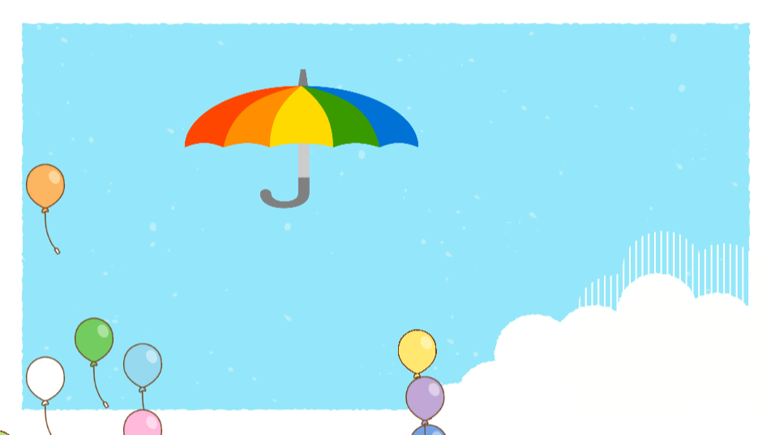
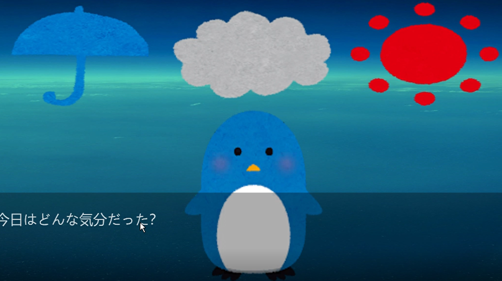
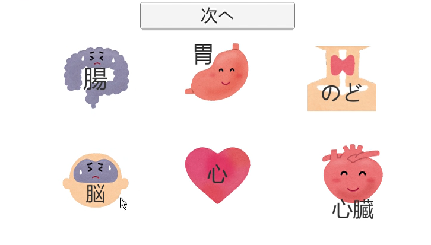
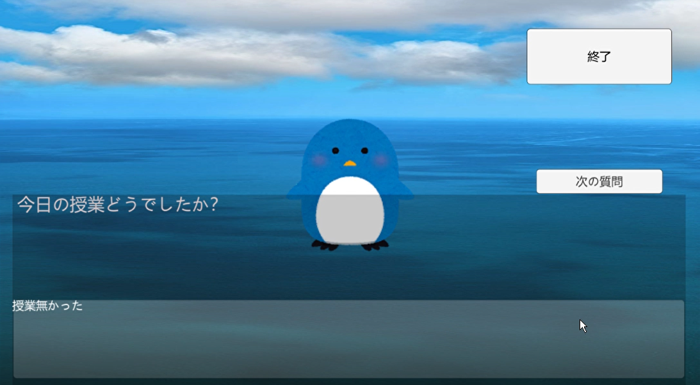
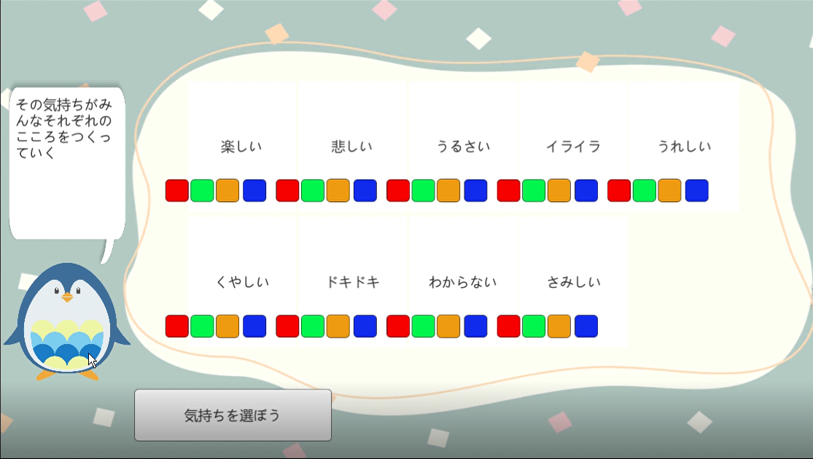
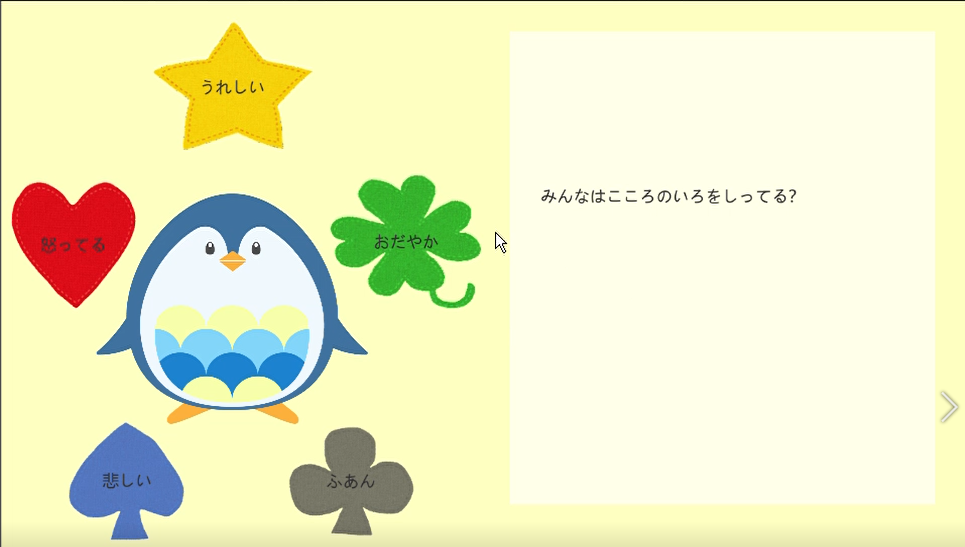
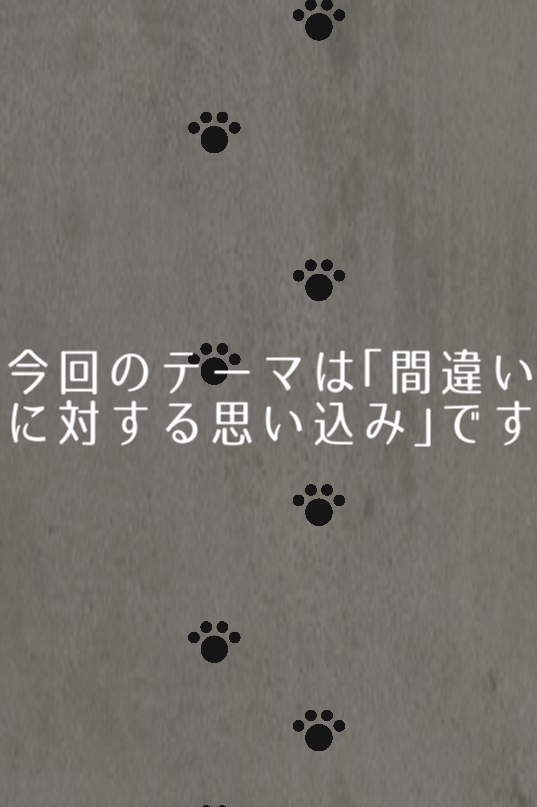
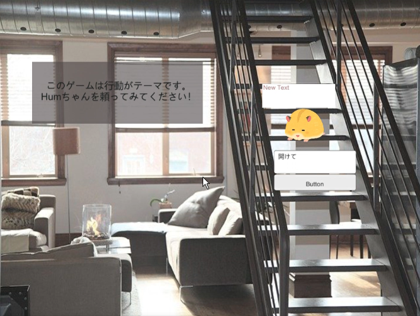
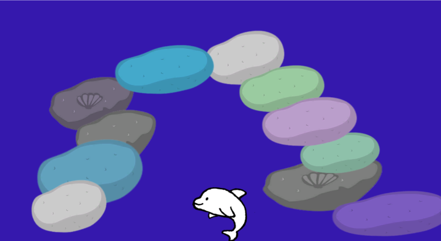
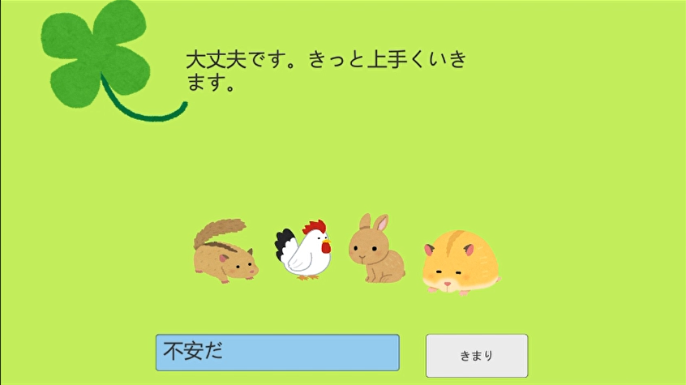

九州産業大学 理工学部 情報科学科で学び、Unityを用いたアプリケーションやゲームの開発、研究発表、共同制作に取り組みました。
特に関心を持ったのは、自分の気持ちを振り返るきっかけや、楽しみながら学べる体験をつくること。ここでは、大学時代の制作・研究・受賞実績を紹介します。
PLATEAU AWARD 2023 · UI/UXデザイン賞
ぷらっとドライブ in 沼津
現実の街を舞台に、安全な運転を体験して学ぶ。
PLATEAUの3D都市モデルを活用した、安全運転学習用のUnity版ドライビングシミュレータ。現実の街のコースで運転したいという利用者の声をもとに制作し、安全な車間距離を体験できる学習機能などを備えました。
- 受賞チーム
- 九州産業大学 合志研究室
- 担当
- プロジェクトリーダー
チームの制作成果が、国土交通省主催のPLATEAU AWARD 2023でUI/UXデザイン賞を受賞しました。
大学の公式受賞記事を読む ↗
WORKS & RESEARCH
作品・研究
気持ちを記録する、遊ぶ、表現する。さまざまな形で体験を考えました。
01 / RESEARCH · UNITY 2D
メンタルヘルス日記アプリ
日々の記録を、相談のきっかけに。
学生相談室で相談する際に、自分の状態を伝えやすくすることを目指した日記アプリケーション。芸術学部の学生と共同で開発しました。
- 睡眠・食事、悩みの項目や感情を選択し、日記を作成。
- 履歴やグラフで、日々の生活と気持ちを振り返る。
- 選択した悩みの項目を可視化し、相談時の話題を整理。
開発内容は2022年度の電気・情報関係学会九州支部連合大会で発表しました。
02 / GAME · OPEN HACK U 2021
Look Mind
ゲームを通して、自分に目を向ける。
心理テストとRPGを組み合わせた、メンタルヘルスをテーマにしたゲーム。物語やキャラクターとの関わりを通して、自分の性格や今の気分を振り返る体験を企画しました。
Open Hack U 2021の参加作品として、ゲームのコンセプトとデモを紹介しました。
発表スライド（PDF）
03 / EXPERIENCE · 2022.04
こころいろ
気持ちを、色で表現する。
筑紫女学園大学×九州産業大学のマルシェで紹介した、子ども向けの体験企画。色を使いながら、自分の気持ちについて考えるきっかけを提案しました。
- 色彩心理を取り入れたパズルの色塗り体験。
- 気持ちを考えるオリジナル紙芝居の読み聞かせ。
- 子どもと保護者に向けた説明用パンフレット。
04 / UNITY GAMES
メンタルヘルスをテーマにしたミニゲーム
大学時代に制作したUnity作品。公開先からゲームをご覧いただけます。
当時の制作画面を見る
既存ポートフォリオに掲載していた、ミニゲームなどの制作画面です。










2022
電気・情報関係学会九州支部連合大会（第75回）
「学生のメンタルヘルスを目的とした日記アプリケーションの開発」
著者：前納聖菜、名嘉はな、真島猛、隅田康明
講演論文を読む ↗大学時代の発表
日本デザイン学会第5支部研究発表会
メンタルヘルスを目的とした日記アプリケーションの開発について発表。
REFLECTION
試行錯誤を、形にする。
日記アプリの共同開発では、慣れないUnityの操作やメンバーとの予定調整に難しさを感じながらも、できることから一つずつ取り組み、研究発表へとつなげました。
気持ちを記録するアプリ、遊びを通じた振り返り、色で表現する体験。大学時代の制作を通して、使う人の立場から体験を考え、試行錯誤を重ねて形にすることを学びました。